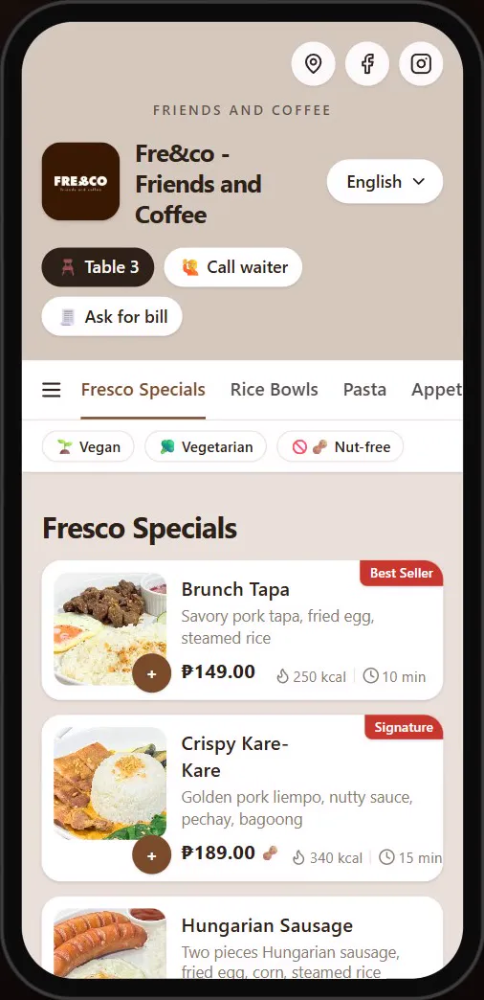

Scan the QR code on your table and the Fre&co menu opens on your phone. Order, follow it from the kitchen to your table, and ask for the bill when you're done.

The whole flow on Fre&co's own menu: the owner's dashboard, a guest ordering from table 3, and the staff serving it.
Point your camera at the QR code on your table. The menu opens, already linked to your table.
Pick your dishes and drinks, choose options like iced or an extra shot, and leave a note for the kitchen.
See your order go from received to preparing to ready, live. Order more anytime.
Tap Ask for bill. Pay at the counter, or the waiter collects it.